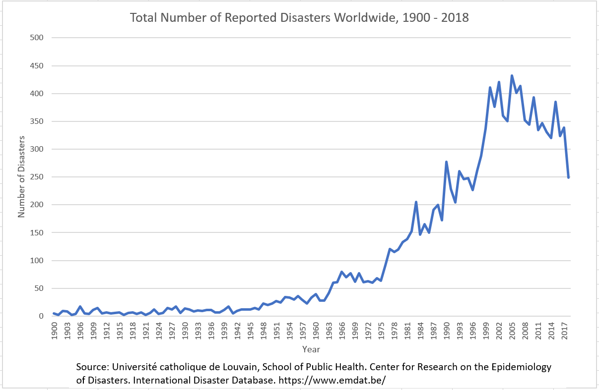

The graph below shows the total number of deaths associated with droughts, floods, storms, temperature extremes, and wildfires worldwide between 1900 and 2018. These particular disaster types could be exacerbated by climate change in the coming decades. Other non-climate related disasters were reported by the data set but were not included in this particular graph (e.g., volcanoes or earthquakes).
What can we learn from this graph? As climate change impacts intensify, policymakers should be aware that droughts and floods have been responsible historically for more deaths than storms, temperature extremes, or wildfires. Therefore, planning efforts can put more emphasis on drought and flood adaptation and prevention measures to reduce the number of lives lost.
Regions will differ in their susceptibility to different disasters, so it is crucial to consider regional variations when planning for disaster.
This graph shows the number of total disasters reported worldwide each year between 1900-2018, based on the data from EMDAT. This graph includes all natural disasters tracked by EMDAT, including those that are not influenced by climate change, such as earthquakes or volcanic activity.
The graph shows a distinct upward trend in the total number of disasters since 1900.
 EMDAT Data SourcePart of the increase may be due to improved data collection over time, with more ability to track and report disasters around the globe. However, climate change may be influencing this increase if the number of climate-related disasters (like storms) increases more drastically than non-climate disasters.